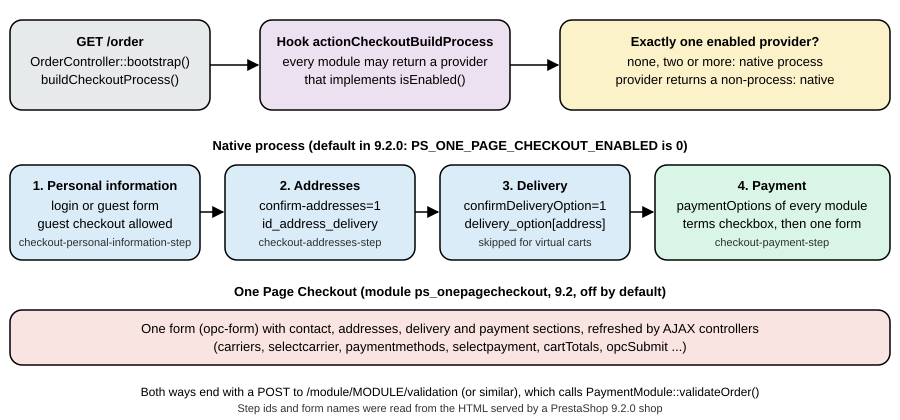

Cart, Checkout and Orders
|
This content was generated with the assistance of AI and should be verified against the official documentation before being relied on in production. |
This page was written against PrestaShop 9.2.0 (released on 2026-09-30; Symfony 6.4; PHP 8.5.12 in the official Docker image;
Hummingbird 2.1.2 as the default theme; the ps_onepagecheckout module at version 0.6.7) and checked on 2026-10-27. The
checkout belongs to the open-source core and every module that touches it is available on every installation. The page
follows the Pocket Coffee cart from the moment a customer adds a bag of beans to the moment the order is delivered: the
data a cart holds, the classes that walk the customer through the checkout, the module that replaces the four steps with one
page in 9.2, the method that turns a cart into an order and everything it writes, the order states and what the core does
when an order moves from one to another, and the multi-shipment mode that 9.1 introduced behind a feature flag. It follows
Catalog and Pricing, whose prices and cart rules it reuses, and it
comes before Payment and Carrier Modules, which writes the modules that
sit at the two ends of the checkout (the carrier chosen in step 3 and the payment method chosen in step 4).
Everything here was run: the cart, the checkout steps, several payment and carrier setups and the order state changes
were exercised on a PrestaShop 9.2.0 shop in Docker through its real storefront (HTTP requests with curl, a cookie jar and
the customer accounts of the Pocket Coffee example), and the order lifecycle was driven by a small module with a console
command. The section "What was run and what was not" lists the exceptions: the One Page Checkout was rendered but no order
was placed through it, and no e-mail was sent because the Docker image has no mail transport.
The cart
A cart is a row of ps_cart plus its lines in ps_cart_product, and it exists as soon as the first product is added: a
visitor who is not logged in gets a cart without a customer (only an id_guest), and a cart is attached to the customer when
the customer logs in or creates an account. A browser cookie remembers which cart belongs to a visitor, so the cart survives
for as long as the front-office cookie does (Configure, Advanced parameters, Administration, "Lifetime of front office
cookies"). When a customer signs in with an empty cart and has an earlier cart that was never ordered, the shop restores the most
recent one if the setting "Re-display cart at login" (configuration key PS_CART_FOLLOWING) is on, which is the default.
The columns of ps_cart that matter for the rest of the page are:
| Column | Meaning |
|---|---|
|
Who owns the cart. |
|
The two addresses chosen in step 2. The tax of the cart is computed on the one selected by |
|
The result of step 3. |
|
Currency and language of the cart; the order inherits both. |
|
The options of the delivery step (recycled packaging, gift wrapping with a message) and whether the customer accepts
several packages. |
|
A JSON document with the state of the checkout steps (reachable, complete) and a checksum of the cart; the checkout restores its progress from it. |
The amounts of a cart are always read through Cart::getOrderTotal($withTaxes, $type, $products, $idCarrier), and the $type
decides which part of the total is returned. The constants are on the Cart class.
| Constant | Value | Returns |
|---|---|---|
|
1 |
The products, before discounts. |
|
2 |
The amount of the cart rules. |
|
3 |
Products plus shipping plus wrapping minus discounts: the amount to pay. |
|
4 |
The same without shipping. |
|
5 |
The shipping cost. |
|
6 |
The gift wrapping cost. |
|
8 |
The products that are shipped (virtual products left out), without shipping. |
|
9 |
Products without the free gifts of cart rules. |
The Pocket Coffee cart of the test (three bags of Ethiopia whole bean 250 g, one Colombia filter 1 kg bag and the starter kit, for the Coffee Club member in Madrid) totalled 91.33 before discounts, 83.65 after the two automatic cart rules, and 88.35 with the 4.70 of the roastery pickup carrier added in the delivery step. The same cart is built by a script in the next sections, with no browser.
The cart presenter (CartPresenter) turns the cart into the array that Smarty templates read; the hooks actionPresentCart
and actionPresentCartProduct let a module change it, actionCartSave runs when the cart is saved,
actionCartUpdateQuantityBefore before a quantity changes, actionUpdateCartAddress when an address of the cart is replaced and
actionCartSummary when the summary used by payment modules is built. Products leave the cart for the order only in
validateOrder(); the cart row itself is kept (it is how an order finds its cart, Order::getIdByCartId()), and
Cart::orderExists() is the test that a cart has already become an order.
The checkout process
The page /order is served by OrderController. On every request it builds a CheckoutProcess, restores the progress stored in
the cart, lets the process handle the request parameters, decides whether the customer must go back to the cart, and renders the
current step. The classes are in classes/checkout/.
-
CheckoutProcessowns an ordered list of steps and the template that renders them all. -
CheckoutSessionis the facade over the context that the steps use: the customer, the cart, the selected addresses, the delivery option, the gift and recycling flags, and the URL of the checkout. -
A step extends
AbstractCheckoutStepand implementsCheckoutStepInterface:handleRequest(),render(), and the three flags reachable, complete and current. The four native steps areCheckoutPersonalInformationStep,CheckoutAddressesStep,CheckoutDeliveryStepandCheckoutPaymentStep. -
DeliveryOptionsFinder(orDeliveryOptionsProviderwhen the multi-shipment flag is on) andPaymentOptionsFindercollect the choices of step 3 and step 4 from the carriers and from the modules that implement the hookpaymentOptions.
The steps run in order, and a step becomes reachable only when the one before it is complete. The delivery step is added only
when the cart is not virtual (Cart::isVirtualCart()); the personal information, addresses and payment steps are always there,
which the test confirmed with a cart that held only the virtual workshop ticket of the previous page: three steps, with the
delivery step missing (the devdocs say that the addresses step is skipped for virtual carts too, but the 9.2.0 source adds it
unconditionally and the storefront asked for the invoice address). Each step handles its own request parameters:
| Step | Section id in the page | What the request carries |
|---|---|---|
Personal information |
|
The login form ( |
Addresses |
|
|
Delivery |
|
|
Payment |
|
The radio |
Two things happen on every request that the steps do not see. First, restorePersistedData() reads
ps_cart.checkout_session_data and applies it only if the checksum stored in it equals the checksum of the cart now.
CartChecksum is a SHA-1 over the shop, customer, guest, currency, language, both addresses and, for every line, the product,
combination, quantity and tax-included total; so any change of those values discards the saved progress and the customer is
taken back to the first step that is not complete. The test showed it: after the delivery option had been chosen, adding one
more product to the cart made /order open on the addresses step again, with the delivery step not reachable. Second,
OrderController redirects to the cart page (where CartController shows the reason) when the cart is empty, when the
minimum purchase amount is not reached, when a product is out of stock or no longer available for ordering, when a product is
below its minimal quantity, or when an address uses a disabled country. Enable a country before using an address in it
(International, Locations, Countries); Spain and Germany are disabled in a fresh installation, and they were enabled for the test.
Hooks around the process: actionCheckoutRender receives the process by reference after it was built (a module can add or
replace a step), actionCheckoutStepRenderTemplate runs before each step template is rendered, actionCheckoutBuildProcess
(new in 9.2) lets a module replace the whole process, actionPresentPaymentOptions receives the payment options before they are
shown, actionFilterDeliveryOptionList filters the delivery options, displayBeforeCarrier and displayAfterCarrier add HTML
before and after the carrier list, displayCarrierExtraContent adds content for one carrier (pickup points, for example),
displayPaymentTop runs at the top of the payment step, displayPaymentByBinaries carries the payment form generated by
binary payment options, displayCheckoutBeforeConfirmation shows custom content before the order is confirmed and
displayExpressCheckout is where express payment buttons appear in the cart (Hummingbird renders it in
cart-detailed-actions.tpl). All of these exist in the 9.2.0 hook table.
Walking the checkout from a script
The storefront speaks plain HTTP, so the whole path can be driven with curl; this is how the examples of this page were
produced, and it is also a quick smoke test for a payment or carrier module. The script logs in, fills the Pocket Coffee
cart, passes the four steps and confirms with the payment module named on the command line.
#!/bin/bash
# usage: checkout.sh <email> <address-id> <payment-module>
# Logs in, fills a cart with the Pocket Coffee sample items, walks the four checkout steps and confirms with the payment module.
# CUSTOMER_PASSWORD comes from the environment; the shop is a local test shop.
B=http://localhost:8080; J=$(mktemp); T=$(mktemp -d); EMAIL=$1; ADDR=$2; MOD=$3
curl -s -c $J -b $J -L -X POST "$B/login" -d back=my-account -d submitLogin=1 -d "email=$EMAIL" -d "password=${CUSTOMER_PASSWORD}" -o $T/login.html
TK=$(grep -o 'static_token":"[a-f0-9]*' $T/login.html | head -1 | cut -d'"' -f3)
# Cart: product id, combination id (0 for none), quantity
for item in "20 40 3" "20 51 1" "22 0 1"; do set -- $item
curl -s -c $J -b $J "$B/cart?add=1&action=update&ajax=1&id_product=$1&id_product_attribute=$2&qty=$3&token=$TK&id_customization=0" -H 'Accept: application/json' -o /dev/null
done
# Step 2: addresses (step 1 is complete because the customer is logged in)
curl -s -c $J -b $J "$B/order" -o /dev/null
curl -s -c $J -b $J -X POST "$B/order" -d "id_address_delivery=$ADDR" -d confirm-addresses=1 -d use_same_address=1 -o /dev/null
# Step 3: delivery; take the first option the shop offers
curl -s -c $J -b $J "$B/order" -o $T/delivery.html
OPTION=$(grep -o 'name="delivery_option\[[0-9]*\]"[^>]*value="[0-9,]*"' $T/delivery.html | head -1 | grep -o 'value="[0-9,]*"' | cut -d'"' -f2)
echo "delivery option: $OPTION"
curl -s -c $J -b $J -X POST "$B/order" -d "delivery_option[$ADDR]=$OPTION" -d confirmDeliveryOption=1 -d delivery_message= -o /dev/null
# Step 4: payment; list the options, then post to the validation controller of the chosen module
curl -s -c $J -b $J "$B/order" -o $T/payment.html
grep -o 'data-module-name="[a-z_]*"' $T/payment.html | tr '\n' ' '; echo
curl -s -i -c $J -b $J -X POST "$B/module/$MOD/validation" -d x=1 | grep -i '^location'
rm -rf $J $Texport CUSTOMER_PASSWORD=<password of the test customer>
bash checkout.sh pcff-ada@example.test 7 ps_wirepayment
# delivery option: 6,7,
# data-module-name="ps_wirepayment" data-module-name="ps_checkpayment" data-module-name="ps_cashondelivery" ...
# Location: http://localhost:8080/order-confirmation?id_cart=16&id_module=15&id_order=7&key=...The redirect to order-confirmation is what every payment module does after validateOrder(); its query string carries the
cart id, the module id, the order id and the secure key of the customer. A request that does not carry the right key is
refused by the confirmation page. Three notes on the script: the product page and the cart are public, so no token other than
the static token printed in the page (static_token) is needed; the pretty paths (/cart, /order) must be used, because
index.php?controller=order is answered with a "This page has moved" page in development mode; and the delivery
options differ between runs of the same cart (6,7, with two ordinary carriers, 12, once a carrier module was installed and
assigned to both products), so the script reads the first option instead of hard-coding one.
One Page Checkout (9.2)
PrestaShop 9.2 includes a module, ps_onepagecheckout, that replaces the four steps with one page: contact, addresses,
delivery and payment in a single form, refreshed by AJAX. In the 9.2.0 image the module is installed and enabled but the
checkout stays native, because the configuration key PS_ONE_PAGE_CHECKOUT_ENABLED is 0; the merchant switches it on in the
back office, and the module reads and writes the key. The module is 0.x software (0.6.7 in the image, pinned in the core
composer.json), which is worth knowing before relying on it.
The integration is a hook, not an override. OrderController::buildCheckoutProcess() asks the CheckoutProcessProviderResolver
for a process before it builds the native one. The resolver runs the hook actionCheckoutBuildProcess for every module, keeps
the values that are CheckoutProcessProviderInterface instances and report isEnabled(), and uses the provider only if exactly
one is left. With none, with several, or with a provider whose buildCheckoutProcess() does not return a CheckoutProcess, the
native process runs, so a broken module cannot break the checkout.

// What a module returns from the hook (simplified from ps_onepagecheckout 0.6.7)
public function hookActionCheckoutBuildProcess(array $params = []): CheckoutProcessProviderInterface
{
return new OnePageCheckoutProcessProvider($this->context, $this);
}
// The contract (src/Adapter/Order/Checkout/CheckoutProcessProviderInterface.php)
interface CheckoutProcessProviderInterface
{
public function isEnabled(): bool;
public function buildCheckoutProcess(CheckoutSession $session, TranslatorComponent $translator): CheckoutProcess;
}With the key set to 1 for the duration of one request, the shop served the single page. The markup carries one form,
opc-form, with the sections js-opc-contact-section, js-opc-addresses-section, js-opc-delivery-section and
js-opc-payment-section; the payment modules appear as the same payment-option entries with the same fallback forms that post
to the validation controllers (/module/ps_wirepayment/validation and the others); and the page defines a JavaScript object
window.ps_onepagecheckout with enabled, taxAddressType, persistAddressDraft, buyerIdentified, the translated messages,
and the URL of every AJAX endpoint: guestInit, addressForm, addressModal, addressesList, states, saveAddress,
saveDraft, deleteAddress, carriers, selectCarrier, paymentMethods, selectPayment, opcSubmit, giftWrapping,
cartTotals and selectAddress. The key was set back to 0 right after the request, and no order was placed through the
single page: that path was not exercised.
What module authors have to do is small and documented. A payment module that returns normal PaymentOption objects works
unchanged; a module that injects JavaScript into the carrier or payment sections must re-run it when the section is refreshed
(the events opcCarriersLoading, opcCarriersUpdated and opcPaymentMethodsUpdated on the prestashop event bus), and a
module that submits its own payment (binary options, smart buttons, redirects) must call
window.ps_onepagecheckout.submitBeforePayment() first so that the customer, address and delivery method are saved before its
flow takes over. OnePageCheckoutAvailability is the single place that reads PS_ONE_PAGE_CHECKOUT_ENABLED; the template
variable is_one_page_checkout_enabled stays available to themes.
Turning the cart into orders: PaymentModule::validateOrder()
Every payment module ends the same way: it calls PaymentModule::validateOrder(), and that one method creates the order. Knowing
what it does explains most "my order is wrong" questions, and it is also the contract that payment modules have to respect, so the
steps are listed here in the order the 9.2.0 source runs them.
public function validateOrder(
$id_cart, // the cart to convert
$id_order_state, // the state the order is created in
$amount_paid, // the amount the customer really paid
$payment_method = 'Unknown',
$message = null, // private message attached to the order
$extra_vars = [], // 'transaction_id' becomes the payment transaction id; the rest goes to the e-mail
$currency_special = null, // currency id when the payment was made in another currency
$dont_touch_amount = false,
$secure_key = false, // the customer's key; compared with hash_equals() when given
?Shop $shop = null,
?string $order_reference = null // a reference to use instead of a generated one
)-
The hook
actionValidateOrderBeforeruns with the cart, customer, currency, the payment method and the order state by reference, so a module can change the state before anything is written. -
The cart, customer, language, shop and currency are reloaded from the cart id (the context of the request does not matter, which is what lets a webhook create the order of a customer who is not browsing).
-
The core refuses with an exception when the order state cannot be loaded, when the payment module is not active, when the cart cannot be loaded, or when
Cart::orderExists()is true ("a cart is turned into an order only once"), and when a$secure_keyis passed that differs from the cart’s. If no secure key is passed the check is skipped and a private message warns that the key was empty. -
The delivery options of the cart are read; if one is missing or no longer valid for an address, the first valid option is used.
-
A reference is generated (
Order::generateReference(): nine random uppercase letters, or the value a module returns from the hookactionGenerateDocumentReference) and checked for uniqueness, unless one was passed. All the orders created from one cart share this reference. -
The total the cart should cost is computed (
getOrderTotal(true, Cart::BOTH), rounded) and each cart rule is validated again; a rule that fails is removed from the cart (see the previous page on cart rules). -
If the order state is logable and the amount paid differs from that total at the computing precision, the state is replaced by
PS_OS_ERROR("Payment error"). The order is still created. The test with a wrong amount (pcffpayment:try-amount, next page) ended in state 8. -
One order is created per package (see below), or a single order with shipments when the multi-shipment flag is on.
-
If the state is logable, the payment is recorded:
Order::addOrderPayment($amount_paid, null, $transaction_id)creates a row inps_order_paymentlinked to the order reference, not to an order id. -
For each order: the optional message is saved; the order detail rows, taxes and cart rule rows are written; the hook
actionValidateOrderruns once per order (withcart,order,customer,currencyandorderStatus); the firstOrderHistoryrow is created with the requested state, which runs the state change logic described in the next section (and the hooksactionOrderStatusUpdate,actionOrderStatusPostUpdateandactionOrderHistoryAddAfter); if stock management andPS_ENABLE_BACKORDER_STATUSare on and some product is not fully in stock, the order is moved on to "On backorder (paid)" or "On backorder (not paid)"; and the confirmation e-mail (order_conf) is sent unless the state is error or canceled, with the PDF invoice attached whenPS_INVOICEis on and the state has the PDF invoice flag. -
After the last order the hook
actionValidateOrderAfterruns with the list of orders, and$this->currentOrderand$this->currentOrderReferencehold the last order id and the shared reference. A payment module redirects with them.
What an order contains
The first order of the test (id 7, reference KDRTVJKNY, bank wire, Coffee Club member in Madrid, carrier "PCFF Parcel" with free
shipping) produced these rows. Only the interesting columns are shown.
| Table | Result |
|---|---|
|
|
|
|
|
One row per line with the tax id, the unit amount and the total amount (for the beans the 10% tax, for the kit the 21% tax). |
|
Rule 1 "PCFF Coffee Club 10% on beans": 6.229 tax incl. / 5.662 tax excl.; rule 2 "PCFF Club 5% on starter kits": 1.452 / 1.200. |
|
Carrier 6, weight 2.65 kg (3 x 0.25 plus 1.00 plus the kit 0.90), shipping cost 0.00 (free above 40). |
|
One row: state 10, with the employee id (0 for a front-office order) and the date. |
|
The cart keeps its row; |
Prices are copied at their final values, including the specific price: the order detail does not remember the 8.90 base price, only the unit price 9.405 and the 5% reduction. This is the reason an edit of the catalog never changes a past order.
One order per package
A package is the set of products of one delivery address that one carrier will ship. With the multi-shipment flag off,
validateOrder() creates one Order per package. A cart with the beans (carrier "PCFF Parcel") and the starter kit (carrier "PCFF
Equipment courier", assigned to the products in the back office) therefore became two orders, 10 and 11, with the same reference
XKFBYLMEW. The totals of each order cover its own products (56.06 and 35.46, 91.52 together, which is what the customer paid)
and each has one ps_order_carrier row with the carrier and weight of its package. A few details of that mode that surprised the
test:
-
The payment lives on the last order created. In a later test with the example payment module (orders 13 and 14, reference
CEDITWYIQ, paid through the provider’s notification) the singleps_order_paymentrow of 91.52 was linked to the reference, and only order 14 showedtotal_paid_real91.52 while order 13 showed 0. When a payment module confirms a payment later, change the state of every order that has the reference (Order::getByReference()), not only of$this->currentOrder. -
total_shipping_tax_inclandtotal_shipping_tax_exclof each order held the shipping of the whole cart (7.87 and 6.50 in both orders, although the beans shipped free), whiletotal_paid_tax_inclof the first order did not include any shipping. Do not add uptotal_shippingover the orders of a reference. -
The order confirmation page uses
Order::getOrdersTotalPaid(), which sums the orders of the reference, and showed 91.52.
Multi-shipment (9.1, feature flag)
PrestaShop 9.1 introduced shipments: one order that is delivered in several parcels, each with its own carrier, cost and tracking
number. The feature is behind the flag improved_shipment (disabled by default, "work in progress" in the devdocs), and the
ground rules are: enable the flag with php bin/console prestashop:feature-flag enable improved_shipment, test your payment and
carrier modules with it on, and expect changes in later releases. With the flag on, OrderController uses a
DeliveryOptionsProvider instead of the DeliveryOptionsFinder, and validateOrder() creates a single order and a row of
ps_shipment per carrier, with the lines of the order in ps_shipment_product.
The same two-carrier cart gave this result (order 12, reference FSKTCIOYD, flag enabled for the duration of the request):
ps_orders: id 12, id_carrier 0, total_paid_tax_incl 91.52, total_shipping_tax_excl 6.50, total_shipping_tax_incl 7.86
ps_order_carrier: two rows, carrier 6 and carrier 7, both with cost 0.00 (the cost is in ps_shipment)
ps_shipment: 2: order 12, carrier 6, address 7, cost 0.00 3: order 12, carrier 7, address 7, cost 6.50 / 7.86
ps_shipment_product: 4: shipment 2, order detail 23 (PC-ETH-WHL-250) x3
5: shipment 2, order detail 24 (PC-COL-FIL-1KG) x1
6: shipment 3, order detail 25 (PC-KIT) x1The differences that matter to code: ps_orders.id_carrier is 0 (the carriers are in the shipments), the shipping cost of each
parcel is in ps_shipment, a shipment has its own packed_at, shipped_at, delivered_at, cancelled_at and
tracking_number, and a virtual product is left out of the shipments. The hook actionGetOrderShipments lets a module
change the shipments of an order. One more oddity of the run: the weight stored in the ps_order_carrier row of carrier 6 was 0.75 kg although its parcel (three
250 g bags and a 1 kg bag) weighs 1.75 kg, while the same cart ordered with the flag off stored 1.75; the 0.90 kg of the other
parcel was right. The flag was switched on and off by the console for each experiment and left disabled. The
feature is described in the project blog post that the devdocs link, but its developer documentation had not been written
at the check date, so code that reads ps_orders.id_carrier should be reviewed before the flag is enabled in production.
Order states
An order state is a row of ps_order_state with a name per language, and it is the only status an order has. Moving an order to
another state is done by adding an OrderHistory row; the history is the audit trail, and ps_orders.current_state is a copy of
the latest row. The back office command UpdateOrderStatusCommand (and the legacy OrderHistory::changeIdOrderState()) refuses
only a change to the state the order already has; the core does not enforce a sequence, so "Delivered" can be set on an order
that was never paid. The sequence is a convention, and the states that module and merchants add are free to fit in anywhere.
The flags of a state
What happens during a change is decided by the flags of the new state, compared with the flags of the old one.
| Flag | Effect |
|---|---|
|
Sets |
|
The first time an order enters a state with this flag it gets an invoice ( |
|
For every invoice with an unpaid rest, a payment of that rest is created ( |
|
Creates the delivery slip number the first time (unless the same change creates the invoice) and updates the delivery date every time. |
|
When the flag changes between the old and the new state, a stock movement ( |
|
|
|
Attach the invoice or the delivery slip as PDF to that e-mail. |
|
Hide the state from the customer history, protect it from deletion in the back office, flag it as deleted, record the module that owns it, and give it the badge color of the back office. |
Stock follows from the old and new flags in a way that is not obvious. The stock is decremented when the order is created
(three bags of 250 g took the stock of the combination from 50 to 47 at the moment of validateOrder()). Moving to the canceled
or error state gives the quantities back, moving from them to another state takes them again (cancel: 47 to 50, back to
"Processing in progress": 44 after the second order), a move to a state with the shipped flag writes a stock movement (rows
with sign -1 of 3, 1 and 1 units for the three lines) and moving to "Refunded" does not restore stock because that state is
neither canceled nor error. A refund of goods is a different feature (merchandise return and credit slips).
The default states
The installation creates 13 states; the PrestaShop Checkout module adds 5 more (ids 14 to 18: waiting for payment, partial refund, partial payment, authorized to be captured, authorization voided) and the example payment module of the next page adds one. The flags below were read from the test database.
| Id | Name | Owner | invoice | paid | delivery | shipped | logable | |
|---|---|---|---|---|---|---|---|---|
1 |
Awaiting check payment |
|
cheque |
|||||
2 |
Payment accepted |
yes |
yes |
yes |
payment (with PDF invoice) |
|||
3 |
Processing in progress |
yes |
yes |
yes |
yes |
preparation |
||
4 |
Shipped |
yes |
yes |
yes |
yes |
yes |
shipped |
|
5 |
Delivered |
yes |
yes |
yes |
yes |
yes |
none |
|
6 |
Canceled |
order_canceled |
||||||
7 |
Refunded |
yes |
refund |
|||||
8 |
Payment error |
payment_error |
||||||
9 |
On backorder (paid) |
yes |
yes |
outofstock |
||||
10 |
Awaiting bank wire payment |
|
bankwire |
|||||
11 |
Remote payment accepted |
yes |
yes |
yes |
payment |
|||
12 |
On backorder (not paid) |
outofstock |
||||||
13 |
Awaiting Cash On Delivery validation |
|
none |
The constants used by the core are configuration keys: PS_OS_CHEQUE (1), PS_OS_PAYMENT (2), PS_OS_PREPARATION (3),
PS_OS_SHIPPING (4), PS_OS_DELIVERED (5), PS_OS_CANCELED (6), PS_OS_REFUND (7), PS_OS_ERROR (8), PS_OS_OUTOFSTOCK and
PS_OS_OUTOFSTOCK_PAID (9), PS_OS_BANKWIRE (10), PS_OS_WS_PAYMENT (11), PS_OS_OUTOFSTOCK_UNPAID (12) and
PS_OS_COD_VALIDATION (13). Always read the id from the configuration; a shop can have states with other ids, and a module must
never hard-code a number. The statuses are managed in Shop Parameters, Order settings, Statuses.
The usual path of a Pocket Coffee order, and the transitions that were run on the test shop, are these. The arrows are a convention, not a rule enforced by the core.
Driving and observing the states from a module
The module pcffcheckout below does two things: it logs every order creation and every state change through the three hooks
that exist for that purpose, and it adds a console command that moves an order to a state through the same CQRS command that
the back office uses. The three hooks have a clear division of labour: actionValidateOrder runs once per created order,
actionOrderStatusUpdate runs before the new state is applied (the old state is still on the order) and
actionOrderStatusPostUpdate after the order row, the invoice, the payment and the stock were updated.
<?php
declare(strict_types=1);
if (!defined('_PS_VERSION_')) {
exit;
}
if (file_exists(__DIR__ . '/vendor/autoload.php')) {
require_once __DIR__ . '/vendor/autoload.php';
}
class Pcffcheckout extends Module
{
public function __construct()
{
$this->name = 'pcffcheckout';
$this->tab = 'checkout';
$this->version = '1.0.0';
$this->author = 'Pocket Coffee';
$this->need_instance = 0;
$this->ps_versions_compliancy = ['min' => '9.0.0', 'max' => '9.99.99'];
parent::__construct();
$this->displayName = $this->trans('Pocket Coffee order log', [], 'Modules.Pcffcheckout.Admin');
$this->description = $this->trans('Logs "order placed" and every order status change.', [], 'Modules.Pcffcheckout.Admin');
}
public function isUsingNewTranslationSystem(): bool
{
return true;
}
public function install(): bool
{
return parent::install()
&& $this->registerHook('actionValidateOrder')
&& $this->registerHook('actionOrderStatusUpdate')
&& $this->registerHook('actionOrderStatusPostUpdate');
}
/**
* Runs inside PaymentModule::validateOrder(), once per order created from the cart.
*
* @param array{cart: Cart, order: Order, customer: Customer, currency: Currency, orderStatus: OrderState} $params
*/
public function hookActionValidateOrder(array $params): void
{
/** @var Order $order */
$order = $params['order'];
PrestaShopLogger::addLog(
sprintf('Order placed: %s, total %s %s', $order->reference, $order->total_paid_tax_incl, $params['currency']->iso_code),
1,
null,
'Order',
(int) $order->id,
true
);
}
/**
* Runs before OrderHistory writes the new state; a module can still read the old one.
*
* @param array{newOrderStatus: OrderState, oldOrderStatus: OrderState, id_order: int} $params
*/
public function hookActionOrderStatusUpdate(array $params): void
{
PrestaShopLogger::addLog(
sprintf('Order %d: %s -> %s requested', $params['id_order'], $params['oldOrderStatus']->name ?: 'none', $params['newOrderStatus']->name),
1,
null,
'Order',
(int) $params['id_order'],
true
);
}
/**
* Runs after the order row, invoice, payment and stock were updated.
*
* @param array{newOrderStatus: OrderState, oldOrderStatus: OrderState, id_order: int} $params
*/
public function hookActionOrderStatusPostUpdate(array $params): void
{
$order = new Order((int) $params['id_order']);
PrestaShopLogger::addLog(
sprintf('Order %d is now "%s" (valid=%d, paid so far %s)', $order->id, $params['newOrderStatus']->name, $order->valid, $order->total_paid_real),
1,
null,
'Order',
(int) $order->id,
true
);
}
}<?php
declare(strict_types=1);
namespace PrestaShop\Module\Pcffcheckout\Command;
use Context;
use Currency;
use Db;
use Employee;
use Order;
use OrderState;
use PrestaShop\PrestaShop\Core\CommandBus\CommandBusInterface;
use PrestaShop\PrestaShop\Core\Domain\Order\Command\UpdateOrderStatusCommand;
use Symfony\Component\Console\Attribute\AsCommand;
use Symfony\Component\Console\Command\Command;
use Symfony\Component\Console\Input\InputArgument;
use Symfony\Component\Console\Input\InputInterface;
use Symfony\Component\Console\Output\OutputInterface;
#[AsCommand(name: 'pcffcheckout:status', description: 'Moves an order to another order state and prints the resulting history')]
final class StatusCommand extends Command
{
public function __construct(private readonly CommandBusInterface $commandBus)
{
parent::__construct();
}
protected function configure(): void
{
$this
->addArgument('order-id', InputArgument::REQUIRED)
->addArgument('state-id', InputArgument::REQUIRED);
}
protected function execute(InputInterface $input, OutputInterface $output): int
{
$orderId = (int) $input->getArgument('order-id');
// The CLI has no employee or currency in the legacy context: the employee is recorded in order_history.id_employee,
// the currency drives the rounding precision of the payment that an accepted-payment state creates
$context = Context::getContext();
$context->employee = new Employee(1);
$context->currency = new Currency((int) (new Order($orderId))->id_currency);
$this->commandBus->handle(new UpdateOrderStatusCommand($orderId, (int) $input->getArgument('state-id')));
$order = new Order($orderId);
$state = new OrderState((int) $order->current_state, 1);
$output->writeln(sprintf(
'#%d %s: state %d "%s", valid=%d, invoice=%s, paid=%s, shipped=%d, delivered=%d',
$order->id,
$order->reference,
$state->id,
$state->name,
$order->valid,
$order->invoice_number ?: '-',
$order->total_paid_real,
$state->shipped,
$state->delivery
));
$output->writeln('history: ' . implode(' -> ', array_column(
Db::getInstance()->executeS('SELECT id_order_state FROM ' . _DB_PREFIX_ . 'order_history WHERE id_order = ' . $orderId . ' ORDER BY id_order_history'),
'id_order_state'
)));
return Command::SUCCESS;
}
}services:
_defaults:
public: false
autowire: true
autoconfigure: true
PrestaShop\Module\Pcffcheckout\Command\StatusCommand: ~After installing the module and placing the order of the checkout script, the order was walked through the usual path:
php bin/console prestashop:module install pcffcheckout
for s in 2 3 4 5; do php bin/console pcffcheckout:status 7 $s; done
# #7 KDRTVJKNY: state 2 "Payment accepted", valid=1, invoice=1, paid=83.650000, shipped=0, delivered=0
# history: 10 -> 2
# #7 KDRTVJKNY: state 3 "Processing in progress", valid=1, invoice=1, paid=83.650000, shipped=0, delivered=1
# history: 10 -> 2 -> 3
# #7 KDRTVJKNY: state 4 "Shipped", valid=1, invoice=1, paid=83.650000, shipped=1, delivered=1
# history: 10 -> 2 -> 3 -> 4
# #7 KDRTVJKNY: state 5 "Delivered", valid=1, invoice=1, paid=83.650000, shipped=1, delivered=1
# history: 10 -> 2 -> 3 -> 4 -> 5The log written by the hooks (table ps_log, visible under Advanced parameters, Logs) for the same order:
Order placed: KDRTVJKNY, total 83.65 EUR
Order 7: none -> Awaiting bank wire payment requested
Order 7 is now "Awaiting bank wire payment" (valid=0, paid so far 0.000000)
Order 7: Awaiting bank wire payment -> Payment accepted requested
Order 7 is now "Payment accepted" (valid=1, paid so far 83.650000)
Order 7: Payment accepted -> Processing in progress requested
Order 7 is now "Processing in progress" (valid=1, paid so far 83.650000)
Order 7: Processing in progress -> Shipped requested
Order 7 is now "Shipped" (valid=1, paid so far 83.650000)
Order 7: Shipped -> Delivered requested
Order 7 is now "Delivered" (valid=1, paid so far 83.650000)This matches the flags: the payment row of 83.65 and the invoice appeared with state 2, the delivery slip with state 3, the stock movements with state 4. A second order, placed with the check payment module and then canceled (state 6), put back to "Processing in progress" (3) and "Refunded" (7), showed the stock figures quoted above.
Two failures of the first attempt are worth keeping because they come up whenever a state change is scripted:
-
In a console command the legacy context has no employee and no currency. The first run threw a PHP warning ("Attempt to read property precision on null") from the payment code after the invoice and the payment row of the new state had been written. The status change is not wrapped in a transaction, so each failed attempt left another payment (five rows of 83.65 on one order) and the order had to be deleted. Set
Context::getContext()->employeeand->currencyfirst, as the command does. -
OrderHistory::addWithemail()returns false when the e-mail cannot be sent, andUpdateOrderStatusHandlerthen throwsChangeOrderStatusException("Failed to update status or sent email") even though the state was changed. The Docker image has no mail transport (PS_MAIL_METHOD1 uses PHPmail()), so the test shop was switched to "never send e-mails" (value 3) while the examples ran and restored afterwards. A real shop needs working mail, or a handler for that exception.
Custom states
A module adds a state with OrderState, usually in install(), stores the id in a configuration key and uses
module_name so that the state can be traced to the module. The state of the pickup payment of the next page is created like this:
$state = new OrderState();
$state->name = [1 => 'Awaiting payment at pickup', 2 => 'Pendiente de pago en tienda'];
$state->module_name = $this->name;
$state->color = '#34209E';
$state->send_email = false;
$state->invoice = false;
$state->logable = false;
$state->paid = false;
$state->unremovable = false;
$state->add() && Configuration::updateValue('PCFFPAYMENT_OS_PICKUP', (int) $state->id);States can also be created and edited through the CQRS commands AddOrderStateCommand, EditOrderStateCommand and
DeleteOrderStateCommand, and through the back office. A state that is unremovable (all the core ones) cannot be deleted
there; module_name lets the back office tell which module owns a state. A state without the logable flag leaves the order
"not valid", which is what keeps unpaid orders out of statistics and sales counters until payment is confirmed.
The order and the customer’s side
The customer sees the order on the confirmation page (order-confirmation, which renders the hooks displayOrderConfirmation,
displayOrderConfirmation1, displayOrderConfirmation2 and, for the payment module, displayPaymentReturn) and in the account
under "Order history", whose detail page renders displayOrderDetail and displayOrderDetailProductLine. The history shown to the
customer leaves out the states flagged hidden. In the back office the employee uses Sell, Orders; the order page has the hooks
displayAdminOrder, displayAdminOrderMain, displayAdminOrderSide, displayAdminOrderTop and the tab hooks, and
actionGetAdminOrderButtons adds buttons. A module that must act on every order should use the hooks of this page, not the
pages of the back office, because orders are also created by the Admin API clients and by the Webservice.
Pitfalls collected from the run
-
An order is created once per cart:
Cart::orderExists()makes a secondvalidateOrder()for the same cart throw. A payment provider that retries a notification needs its own idempotency check before calling it. -
One cart can become several orders with one reference when the products need different carriers (flag off); payments and states must be handled for all of them.
-
The core does not enforce a sequence of order states; a module that needs one must check the old state in
actionOrderStatusUpdate. -
The amount passed to
validateOrder()is compared with the cart total only for logable states and only moves the order to "Payment error"; it does not stop the order from being created. -
A change of the cart (a product, a quantity, an address, the currency) after the customer chose the delivery option sends the customer back to the first incomplete step.
-
The checkout redirects to the cart when a country is disabled, a product is out of stock, or a minimal quantity is not met; the reason is on the cart page, not on
/order. -
Countries and zones must be enabled and have carriers and payment modules assigned, or the delivery and payment steps are empty.
-
index.php?controller=orderanswers with a "This page has moved" notice in development mode; use/order. -
Anything that changes states from the command line needs an employee and a currency in the context.
What was run and what was not
Run on PrestaShop 9.2.0 in Docker (Apache 2.4.68, PHP 8.5.12, MySQL 8.4; Hummingbird 2.1.2; ps_onepagecheckout 0.6.7): the
cart, address, delivery and payment steps of the real storefront through curl for a logged-in customer (a dozen orders with the
three offline payment modules and the example payment module, with one carrier, with two carriers, and with a carrier module);
the cart and cart rule totals; the One Page Checkout page rendered for one request; the multi-shipment flag enabled for one
checkout; the order states 2 to 5 on a real order and 6, 3 and 7 on another with the stock figures read from the database; the
hooks of the module pcffcheckout (installed, executed, log read back); a virtual-only cart.
Not run: an order placed through the One Page Checkout page, a guest checkout (the forms were not submitted), the back-office order
page and its status dropdown (the same command was used from the console), the e-mails (no mail transport, PS_MAIL_METHOD was set
to "never send" during the run and restored), the PDF invoice and delivery slip rendering, credit slips and merchandise returns, and the
Admin API operations on orders (the Admin API of 9.2.0 has no order resource other than order messages, order returns and their
states).
References
-
PrestaShop project blog: Introducing Shipments in PrestaShop 9.1
-
Tizon and Horton, PrestaShop 1.5 Beginner’s Guide, Packt, 2013: background on the 1.5 order process; its checkout, payment and admin screens are legacy